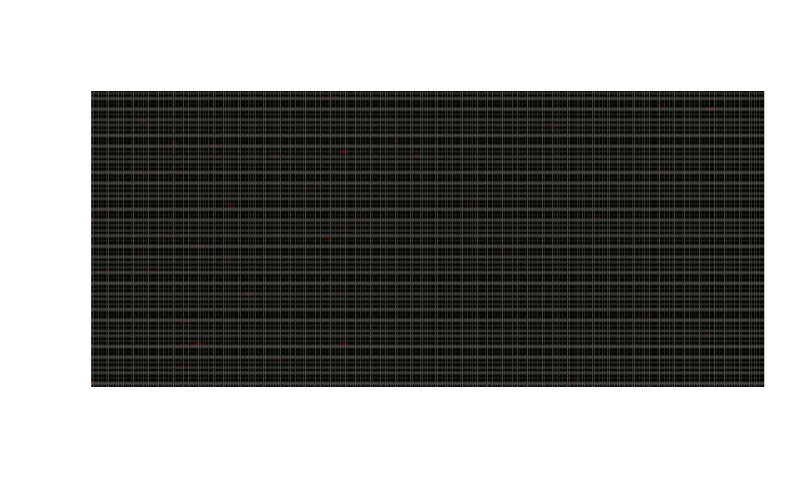

Read, write and plot TIFFs
Volker J. Schmid, Bioimaging group, Department of Statistics, LMU Munich
2022-03-11
Source:vignettes/readwriteplot.Rmd
readwriteplot.Rmd## Bioimagetools 1.1.5Read and write 3D RGB tiff stacks
readTIF() and writeTIF() read and write
tiff stacks.
3D and color stacks are automatically recognized by
readTIF(), if the meta information is correct. Available
meta information is saved as attributes. readTIF() can also
handle URLs. The function returns an array with range 0 to 1.
cell <- bioimagetools::readTIF("http://ex.volkerschmid.de/cell.tif")
## Warning in tiff::readTIFF(file, all = TRUE, info = TRUE, as.is = as.is, :
## TIFFReadDirectory: Unknown field with tag 50838 (0xc696) encountered
## Warning in tiff::readTIFF(file, all = TRUE, info = TRUE, as.is = as.is, :
## TIFFReadDirectory: Unknown field with tag 50839 (0xc697) encountered
print(dim(cell))
## [1] 512 512 3 52
print(attributes(cell)$dim)
## [1] 512 512 3 52
print(attributes(cell)$bits.per.sample)
## [1] 16
par(pty="s")
bioimagetools::img(cell, z=25 ,col="rgb")
writeTIF() writes out tiff stacks. Meta information in
attributes are saved. The bits per sample can be controlled by an
option.
writeTIF(cell, file="my_cell.tif")
## [1] 52readClassTIF() is a special version of
readTIF() for images with a very low number of intensity
values, e.g. masks or segmented images.
bioimagetools::writeTIF(2*EBImage::thresh(cell[,,1,])+EBImage::thresh(cell[,,2,]), file="simple.tif")
## [1] 52
mysimple <- readClassTIF("simple.tif", n=3)
par(pty="s")
bioimagetools::img(mysimple[,,25],col="red",up=3)
## Warning in file.remove("my_cell.tif"): cannot remove file 'my_cell.tif', reason
## 'No such file or directory'## [1] FALSE## Warning in file.remove("simple.tif"): cannot remove file 'simple.tif', reason
## 'No such file or directory'## [1] FALSEPlotting
img() is a plotting function for images stored in an
array.

bioimagetools::img(cell, z=25, col="r")
bioimagetools::img(cell, z=25, col="grey")
Reading Bitmap files
Simple Bitmap files can be imported by readBMP().
bi<-readBMP(system.file(package = "bioimagetools","extdata", "V.bmp"))
par(pty="s")
image(bi, col=grey(seq(0,1,length=2^8)))
Single TIF slices
In order to work with single slices, you would like to select the slice from the array:
slice30<-cell[,,,30]However, this will result in the wrong dimension. bioimagetools always needs 4d array:
dim(slice30) # only 3d
## [1] 512 512 3
dim(slice30) <- c(dim(slice30), 1)
dim(slice30) # 4d
## [1] 512 512 3 1
img(slice30, z=1, col="rgb")
To read single RGB slices, you can use readTIFF. Make sure to add the option channels=3 for an RGB slice.
To stack single slices use abind from the abind package:
for (i in 1:52)writeTIF(cell[,,,i],paste0("slice",i,".tif")) # write slices
slice<-list()
for (i in 1:52)slice[[i]]<-readTIF(paste0("slice",i,".tif"), channels=3) # read slices
allslices<-slice[[1]] # slice 1
for (i in 2:52)allslices<-abind::abind(allslices, slice[[i]]) # stack slices 2 to 52
dim(allslices)
## [1] 512 512 3 52The attributes will be off for the stacked array, so we need to add them from hand using one of the slices (not the dimension!):
attrib<-attributes(slice[[1]])
attrib<-attrib[names(attrib)!="dim"] # Remove dimension attribute
attributes(allslices)<-c(attributes(allslices),attrib)